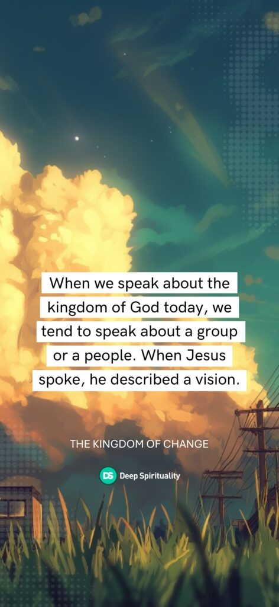
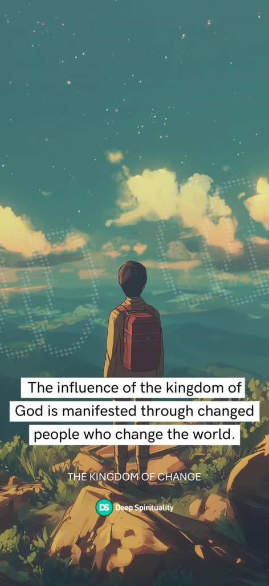
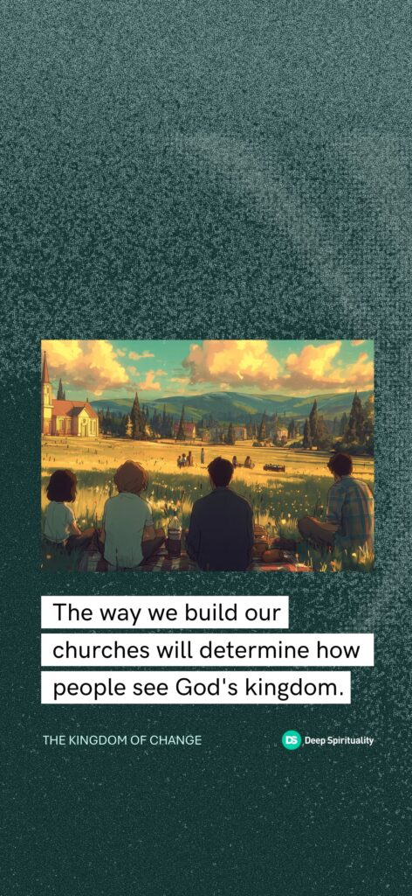

https://deepspirituality.com/wp-content/uploads/2017/07/kingdom_of_change.mp3
Asistí a la universidad en Boston, pero una bandera de la Universidad de Míchigan ondea afuera de mi casa para significar mi perdurable lealtad de la infancia al fútbol americano de los Wolverines..
Dondequiera que he vivido o viajado, los Wolverines han sido una preocupación constante. Me envían a un tumulto emocional cualquier sábado en que no logran ganar, especialmente contra los temidos Ohio State Buckeyes.
Este tipo de lealtad emocional fue cultivado en mi juventud y quedó inextricablemente entretejido en el tejido de mi vida a través de mil imágenes y sonidos. Por profunda que pueda ser esta lealtad, es leve en comparación con la fidelidad apasionada que Jesús espera de quienes reclamarían su reino como propio.
Jesús habló sobre el reino de Dios más que nosotros hoy en día. Cuando comenzó su ministerio, enseñaba en las sinagogas (Lucas 4:14-15), y el pasaje siguiente confirma que su mensaje era sobre el reino de Dios:
42 Cuando ya era de día, salió y se fue a un lugar desierto; y la gente le buscaba, y llegando a donde estaba, le detenían para que no se fuera de ellos. 43 Pero él les dijo: Es necesario que también a otras ciudades anuncie el evangelio del reino de Dios; porque para esto he sido enviado. 44 Y predicaba en las sinagogas de Galilea.
Lucas 4:42-44 RVR1960
Cuando hablamos del reino de Dios hoy, tendemos a hablar de un grupo o un pueblo Cuando Jesús habló, describió una visión. Esta visión era de un mundo transformado por su reino, y aquellos que escuchaban estaban absortos.
Y se le dio el libro del profeta Isaías; y habiendo abierto el libro, halló el lugar donde estaba escrito: [18] El Espíritu del Señor está sobre mí Por cuanto me ha ungido para dar buenas nuevas a los pobres; Me ha enviado a sanar a los quebrantados de corazón; A pregonar libertad a los cautivos, Y vista a los ciegos; A poner en libertad a los oprimidos; [19] A predicar el año agradable del Señor. [20] Y enrollando el libro, lo dio al ministro, y se sentó; y los ojos de todos en la sinagoga estaban fijos en él.
Lucas 4:17-20 RVR1960
Cuando Juan el Bautista más tarde cuestionó la validez de Jesús desde la prisión, Jesús le dio una respuesta fortalecedora: su visión del reino se estaba convirtiendo en una realidad.
[2] Y al oír Juan, en la cárcel, los hechos de Cristo, le envió dos de sus discípulos, [3] para preguntarle: ¿Eres tú aquel que había de venir, o esperaremos a otro? [4] Respondiendo Jesús, les dijo: Id, y haced saber a Juan las cosas que oís y veis. [5] Los ciegos ven, los cojos andan, los leprosos son limpiados, los sordos oyen, los muertos son resucitados, y a los pobres es anunciado el evangelio; [6] y bienaventurado es el que no halle tropiezo en mí.
Mateo 11: 2-6 RVR1960
El libro de los Hechos nos dice que Jesús pasó sus últimos momentos con sus discípulos hablando sobre el reino, lo cual debería hacernos reflexionar a cada uno de nosotros. ¿Por qué se aseguró Jesús de que su énfasis final a los apóstoles fuera el reino?
En el primer tratado, oh Teófilo, hablé acerca de todas las cosas que Jesús comenzó a hacer y a enseñar, [2] hasta el día en que fue recibido arriba, después de haber dado mandamientos por el Espíritu Santo a los apóstoles que había escogido; [3] a quienes también, después de haber padecido, se presentó vivo con muchas pruebas indubitables, apareciéndoseles durante cuarenta días y hablándoles acerca del reino de Dios.
Hechos 1:1-3 RVR1960
Si estamos viviendo en un mundo post-cristiano debido al declive del cristianismo, quizás deberíamos considerar las razones espirituales detrás de esta tendencia. Una podría ser nuestro fracaso en entender y/o abrazar el reino de Dios.
“Cuando hablamos del reino de Dios hoy, tendemos a hablar de un grupo o un pueblo. Cuando Jesús hablaba, describía una visión.”
El reino interior
Preguntado por los fariseos, cuándo había de venir el reino de Dios, les respondió y dijo: El reino de Dios no vendrá con advertencia, [21] ni dirán: Helo aquí, o helo allí; porque he aquí el reino de Dios está entre vosotros.
Lucas 17:20-21 RVR1960
Los fariseos, que eran uno de los principales líderes religiosos de su tiempo, no podían entender el reino porque su pasión era por la apariencia exterior en lugar de la sustancia interna (Mateo 23:25-28). Se acercaron a Jesús en Lucas 17:20-21 preguntando por tiempos y fechas que indicaran cuándo aparecería el reino.
Jesús respondió diciéndoles que el reino no es un “aquí” ni un “allí”, lo que significa que no es una etiqueta ni un lugar. Cuando describimos el reino como una determinada denominación, edificio o conjunto de rituales estructurados, cometemos el mismo error de Israel en tiempos de Jeremías. El pueblo buscaba seguridad al tener el “templo del Señor” en lugar de la condición correcta del corazón (Jeremías 7:1-11).
Vivimos en un peligro constante de convertirnos en fariseos que abordan superficialmente los asuntos espirituales de nuestras vidas.
Algunos argumentarán que la traducción de “dentro de ustedes” puede ser “entre ustedes” o “en su medio.” Sea cual sea la frase que elijamos, Jesús dejó pocas dudas de que el objetivo espiritual de sus intenciones, aquí y a lo largo de los evangelios, era el corazón.
Ya sea que nos llamemos cristianos, discípulos o algún otro término, debe haber una transformación del corazón si queremos experimentar y ser su reino. Esta es la razón por la cual el punto de eje del primer sermón de Jesús es Mateo 5:20, que advierte a quienes lo siguen que vayan más allá de los fariseos.
Porque os digo que si vuestra justicia no fuere mayor que la de los escribas y fariseos, no entraréis en el reino de los cielos.
Mateo 5:20 Versión Reina-Valera 1960
¿Por qué es importante todo esto? Vivimos en peligro constante de convertirnos en fariseos que abordan superficialmente los asuntos espirituales de nuestras vidas, para luego construir organizaciones que llamamos iglesias y que tienen poca semejanza con el reino de Dios.
Jesús quiere que construyamos su reino, no el nuestro. Esto significa que cada cristiano necesita familiarizarse con las cualidades del reino de Dios en su interior para que juntos podamos ser el reino en el exterior.
La influencia del reino
Entonces Jesús contó otra historia: “El reino de los cielos es como la levadura que una mujer tomó y escondió en un gran tazón de harina hasta que hizo que toda la masa subiera.”
Mateo 13:33 RVR1960
El reino de Dios está destinado a ser una influencia en el mundo. Cuando su reino se apodera de nuestros corazones, nos convertimos en el medio por el cual él ejerce esta influencia.
Jesús compara el reino con la levadura para enseñarnos sobre “su influencia silenciosa y secreta” (ver el Comentario Púlpito). La influencia de la levadura se basa en su tasa de crecimiento exponencial. Considera el hecho de que las células humanas se dividen a una tasa de una vez cada 12 horas, mientras que la levadura se divide una vez cada dos horas.
Si, de hecho, la mujer en esta parábola simboliza a la iglesia, nuestro propósito como cuerpo colectivo de creyentes es esparcir la levadura del reino. Si somos verdaderamente personas del reino, nuestra influencia permeante debería igualar o superar el efecto transformador de Jesús (Juan 14:12-13). Ese efecto transformador es el cambio.
El reino del cambio
Por aquel tiempo, Juan el Bautista comenzó a predicar en la región desértica de Judea. [2] Juan decía: “Cambien sus corazones y vidas porque el reino de los cielos está cerca.”
Mateo 3:1-2 RVR1960
Podemos llegar a estar tan preocupados por nuestra iglesia particular que olvidamos esta verdad: la levadura que estamos trabajando en la masa del mundo es el reino. En lugar de preguntarnos si cumplimos con las expectativas o calificaciones humanas de nuestra iglesia, deberíamos preguntarnos si estamos cumpliendo con la visión espiritual de Jesús como el reino de Dios.
La Versión del Nuevo Siglo es particularmente útil para responder a esta pregunta porque traduce la palabra religiosamente familiar "arrepentimiento" como "cambien sus corazones y vidas", lo cual es más claro para quienes no están familiarizados con la Biblia. También es un buen golpe de agua fría en la cara para aquellos de nosotros que podríamos beneficiarnos de una nueva mirada a un concepto antiguo.
Si realmente somos personas del reino, nuestra influencia penetrante debería igualar o superar el efecto transformador de Jesús.
Juan el Bautista, que precedió a Jesús, nos introdujo al reino diciendo: “Cambien sus corazones y vidas porque el reino de los cielos está cerca.” Jesús siguió a Juan con el mismo mensaje en Mateo 4:17 (RVR1960), y nuevamente en Mateo 18:3, donde dijo: “Debes cambiar y convertirte en como niños pequeños. De lo contrario, nunca entrarás en el reino de los cielos.”
En Marcos 1:4 (RVR1960), las Escrituras enseñan que Juan predicó un “bautismo de corazones y vidas cambiadas para el perdón de los pecados.” Nuevamente predicó el cambio en Marcos 1:15 (RVR1960). Finalmente, en Lucas 3:7-9 (RVR1960), advirtió a aquellos que confiaban en su trasfondo o herencia religiosa que este nuevo reino solo podría ser heredado por aquellos dispuestos a cambiar.
Jesús trajo este mismo mensaje en Lucas 5:31-32 (RVR1960) cuando dijo: “No he venido a invitar a personas buenas, sino a pecadores para que cambien sus corazones y vidas.” Su predicación enfatizó la transformación:
- Advirtió a las ciudades resistentes (Lucas 10:13, Lucas 11:32 RVR1960).
- Enseñó que todos los pecados requieren cambio—no solo los pecados que consideramos particularmente escandalosos (Lucas 13:3,5 RVR1960).
- Explicó que un corazón cambiado es lo que llena el cielo de alegría (Lucas 15:10 RVR1960).
Este mensaje del reino de cambio continúa en el libro de los Hechos sin Jesús, donde sus discípulos avanzaron el reino y construyeron su iglesia. En el primer sermón del evangelio, Pedro dijo a la gente que cambiara sus corazones y vidas y se bautizara (Hechos 2:38 RVR1960). Aprendemos de él que esta oportunidad de cambiar nuestros corazones y vidas y tener nuestros pecados perdonados es el regalo de Jesús (Hechos 5:31 RVR1960).
Pablo siguió a Pedro con el mensaje de cambio:
En el pasado, las personas no entendían a Dios, y él ignoró esto. Pero ahora, Dios les dice a todas las personas en el mundo que cambien sus corazones y vidas.
Hechos 17:30 RVR1960
Más tarde, Pablo le contó al rey Agripa acerca de su visión del cielo y del propósito de su vida::
Sino que anuncié primeramente a los que están en Damasco, y Jerusalén, y por toda la tierra de Judea, y a los gentiles, que se arrepintiesen y se convirtiesen a Dios, haciendo obras dignas de arrepentimiento.
Hechos 26:20 RVR1960
El reino de Dios es un reino de cambio. Aquellos que buscan su reino deben abrazar, vivir y enseñar el mensaje de cambio.
“Aquellos que buscan su reino deben abrazar, vivir y enseñar el mensaje del cambio.”
El reino cristiano
[14] Pero el entendimiento de ellos se embotó; porque hasta el día de hoy, cuando leen el antiguo pacto, les queda el mismo velo no descubierto, el cual por Cristo es quitado. [15] Y aun hasta el día de hoy, cuando se lee a Moisés, el velo está puesto sobre el corazón de ellos. [16] Pero cuando se conviertan al Señor, el velo se quitará.
[17] El Señor es el Espíritu, y donde está el Espíritu del Señor, allí hay libertad. [18] Por tanto, no tenemos el rostro cubierto. Todos reflejamos la gloria del Señor, y estamos siendo transformados para ser como él. Este cambio en nosotros trae una gloria cada vez mayor, que viene del Señor, que es el Espíritu. 2 Corintios 3:14-18 RVR1960
En términos generales, hay esencialmente dos tipos de cristianos en las Escrituras (Efesios 2:14-22 RVR1960). Un grupo, como los fariseos, mide legalistamente el rendimiento y compara la apariencia para determinar el éxito. El otro grupo sigue un camino más espiritual, enfatizando su caminar con Dios y el cambio transformador que resulta de la experiencia. He sido ambos tipos, y puedo asegurarles que el último representa nuestra meta, que es ser cristianos del reino.
Porque él es nuestra paz, que de ambos pueblos hizo uno, derribando la pared intermedia de separación, [15] aboliendo en su carne las enemistades, la ley de los mandamientos expresados en ordenanzas, para crear en sí mismo de los dos un solo y nuevo hombre, haciendo la paz, [16] y mediante la cruz reconciliar con Dios a ambos en un solo cuerpo, matando en ella las enemistades.
[17] Y vino y anunció las buenas nuevas de paz a vosotros que estabais lejos, y a los que estaban cerca; [18] porque por medio de él los unos y los otros tenemos entrada por un mismo Espíritu al Padre. Efesios 2:14-18 RVR1960
Los cristianos del Reino han eliminado las coberturas superficiales de la tradición religiosa, las etiquetas y otras categorizaciones que producen estatus y que ciegan sus mentes ante la intención última de Dios, que es el cambio transformador.
Este cambio no se trata meramente de eliminar el fracaso moral del pecado, sino de experimentar la transformación. Significa que literalmente nos convertimos en una persona completamente diferente (Colosenses 1:27): la persona oculta bajo la superficie que conocemos pero que hemos tenido miedo de ser (Colosenses 3:1-3).
A ellos Dios ha querido dar a conocer entre los gentiles las riquezas de la gloria de este misterio, que es Cristo en vosotros, la esperanza de gloria.
Colosenses 1:27 RVR1960
Si, pues, habéis resucitado con Cristo, buscad las cosas de arriba, donde está Cristo sentado a la diestra de Dios. [2] Poned la mira en las cosas de arriba, no en las de la tierra. [3] Porque habéis muerto, y vuestra vida está escondida con Cristo en Dios. [4] Cuando Cristo, que es nuestra vida, se manifieste, entonces vosotros también seréis manifestados con él en gloria.
Colosenses 3:1-4 RVR1960
Nos convertimos en esta persona cuando Dios nos saca de debajo de tres cosas:
- Dureza por el dolor de la vida,
- Culpa por el pecado de la vida, y
- Desesperanza por la decepción de la vida.
Este proceso suele ser más fácil para aquellos que no tienen historia eclesiástica, ya que no llegan al reino con ideas preconcebidas sobre las Escrituras, apego a la tradición o recuerdos nostálgicos de tiempos pasados.
Aquellos con historial eclesiástico a menudo tienen una capa externa de religiosidad que cubre su dureza, culpa y desesperanza. Esta religiosidad es una actuación externa aprendida al crecer alrededor de iglesias. Estas personas pueden tener asistencia perfecta a la iglesia, pero carecen del poder para romper barreras y descubrir la persona que Dios quiere que sean.
Para experimentar un cambio transformador, aquellos con historia en la iglesia necesitan un tipo particular de valor, donde se miren en el espejo de la Palabra de Dios no para medir su desempeño, sino para encontrar su destino en el reino. Este destino está enterrado profundamente en sus corazones, deseando ser mostrado, lleno de energía y vida, y listo para cambiar el mundo (Santiago 1:22-25).
¿Cuál es la importancia y urgencia de ser cristianos del reino? Vivimos en tiempos superficiales donde los problemas se acumulan, las soluciones son superficiales y el fracaso de las instituciones humanistas nos deja sin esperanza y polarizados. Estos son los momentos oscuros en los que el pueblo de Dios debería brillar con más intensidad—no señalando con el dedo, sino manifestando el poder inigualable de Dios a través de nuestras vidas y iglesias. Cuando hacemos esto, podemos mostrar al mundo la mayor esperanza conocida por el hombre, que es el reino de Dios.
“Vivimos en tiempos superficiales. Estos son los momentos oscuros en los que el pueblo de Dios debería brillar con más fuerza.”
La iglesia del reino
Hemos aprendido que el reino de Dios está dentro. Su influencia es permeante y exponencial, manifestada a través de personas cambiadas que cambian el mundo. Esto resulta en lo que llamamos cristianos del reino. Estos cristianos del reino eran los trabajadores por los que Jesús dijo a los apóstoles que oraran, sin los cuales los campos maduros de corazones necesitados quedarían sin atender.
Jesús recorría todas las ciudades y aldeas, enseñando en sus sinagogas, proclamando las buenas nuevas del reino y sanando toda enfermedad y dolencia. [36] Al ver las multitudes, tuvo compasión de ellas, porque estaban desamparadas y dispersas, como ovejas que no tienen pastor. [37] Entonces dijo a sus discípulos: “La cosecha es abundante, pero los obreros son pocos. [38] Por tanto, pedid al Señor de la cosecha que envíe obreros a su cosecha.”
Mateo 9:35-38 RVR1960
Cuando estos cristianos del reino se reúnen y se unifican, tenemos una iglesia del reino. Esta iglesia del reino es lo que Jesús deseaba. Habló con Pedro sobre esta iglesia del reino con la esperanza de que la visión se transmitiera de la primera generación de creyentes a los que están vivos hoy:
Jesús respondió: “Bienaventurado eres, Simón hijo de Jonás, porque no te lo reveló carne ni sangre, sino mi Padre que está en los cielos. [18] Y yo también te digo que tú eres Pedro, y sobre esta roca edificaré mi iglesia, y las puertas del Hades no prevalecerán contra ella. [19] Y a ti te daré las llaves del reino de los cielos; y todo lo que ates en la tierra será atado en los cielos, y todo lo que desates en la tierra será desatado en los cielos.”
Mateo 16:17-19 RVR1960
El debate en torno al significado de “Pedro” y “roca” en este pasaje a veces puede oscurecer una verdad importante. Jesús estaba construyendo la iglesia para representar su reino en la tierra. En este sentido, la forma en que construimos nuestras iglesias determinará cómo las personas ven el reino de Dios (Efesios 3:10-11).
Por esta razón, todo cristiano debería preocuparse por la condición espiritual de su iglesia. ¿Estamos construyendo el reino desde el corazón de cada cristiano? ¿Son nuestras vidas y nuestro mensaje tan atractivos que estamos difundiendo la influencia transformadora y penetrante del reino? ¿Estamos haciendo todo lo posible por vivir como cristianos del reino y, a través del Espíritu, ser guiados hacia la unidad extraordinaria que permite a Jesús llamarnos una iglesia del reino?
Estas preguntas y sus derivados deberían guiarnos a lo largo de nuestras vidas en el reino de Dios. Deberían llenar nuestros corazones y mentes de pasión y propósito que, al fluir hacia nuestros matrimonios, familias y amistades, cambiarán el mundo.
Ve más profundo
Para descubrir lo que realmente significa vivir como un cristiano del reino, lee La Oración del Reino—una parte clave de nuestra serie, Los 12 días de Oración.
{kind=link}

{kind=link}

{kind=link}

Russ Ewell es Ministro Ejecutivo de la Iglesia Cristiana del Área de la Bahía y autor de *He’s Not Who You Think He Is*. Su escritura y enseñanza exploran la fe en el límite de la vida moderna. Con más de tres décadas de experiencia en liderazgo, ayuda a las personas a descubrir un cristianismo bíblico que es intelectualmente serio, emocionalmente reconfortante y transformador.
Russ Ewell es Ministro Ejecutivo de la Iglesia Cristiana del Área de la Bahía y autor de *He’s Not Who You Think He Is*. Su escritura y enseñanza exploran la fe en el límite de la vida moderna. Con más de tres décadas de experiencia en liderazgo, ayuda a las personas a descubrir un cristianismo bíblico que es intelectualmente serio, emocionalmente reconfortante y transformador.